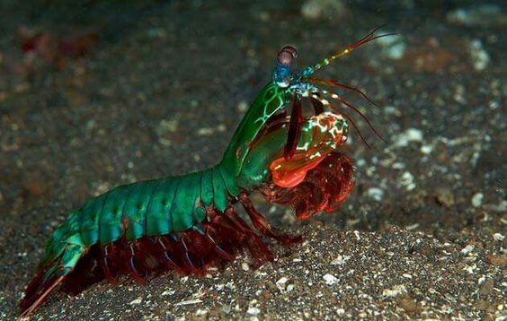

Fatos sobre o Stomatopoda.
Informações Gerais.
The Mantis Shrimp (or ‘Stomatopod’) is a small, aggressive marine Crustacean, that inhabit tropical and subtropical waters of the Indian and Pacific Oceans between Eastern Africa and Hawaii.
Cientific name: Odontodactylus scyllarus
Kingdom: Animalia
Phylum: Arthropoda
Subphylum: Crustacea
Class: Malacostraca
Subclass: Hoplocarida
Order: Stomatopoda

They are older than dinosaurs.
Stomatopods began evolving independently from other members of the class Malacostraca nearly 400 million years ago, about 170 million years before dinosaurs.
Some mantis shrimp species are monogamous, remaining with the same partner for up to 20 years.
They live to together in the same burrow, and both male and female take care of the eggs.
Mantis shrimp are eaten in Japanese, Cantonise, Vietnemese, Mediterranean, Phillipino and Hawaiin cuisines.
After cooking, their flesh is closer to that of lobsters tahn shrimp. In Asian culture, they are often deep fried with garlic, and chilli.
Smashers can punch at same velocity as a gunshot from a .22 caliber rifle.
Smasher mantis shrimp have two raptorial appendages (called ‘dactyl clubs’) on the front of its body that it uses to punch its prey. These fists are spring loaded, able to accelerate from their body at over 50 mph, delivering a force of over 1,500 newtons, enough to smash through crabs and clam shells. That’s 2.5k times the force of the shrimps own weight, if a human could do that they’d be able to punch through steel.
